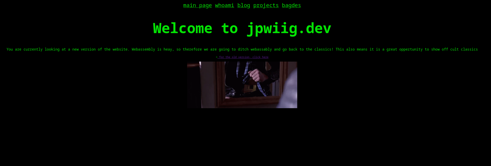
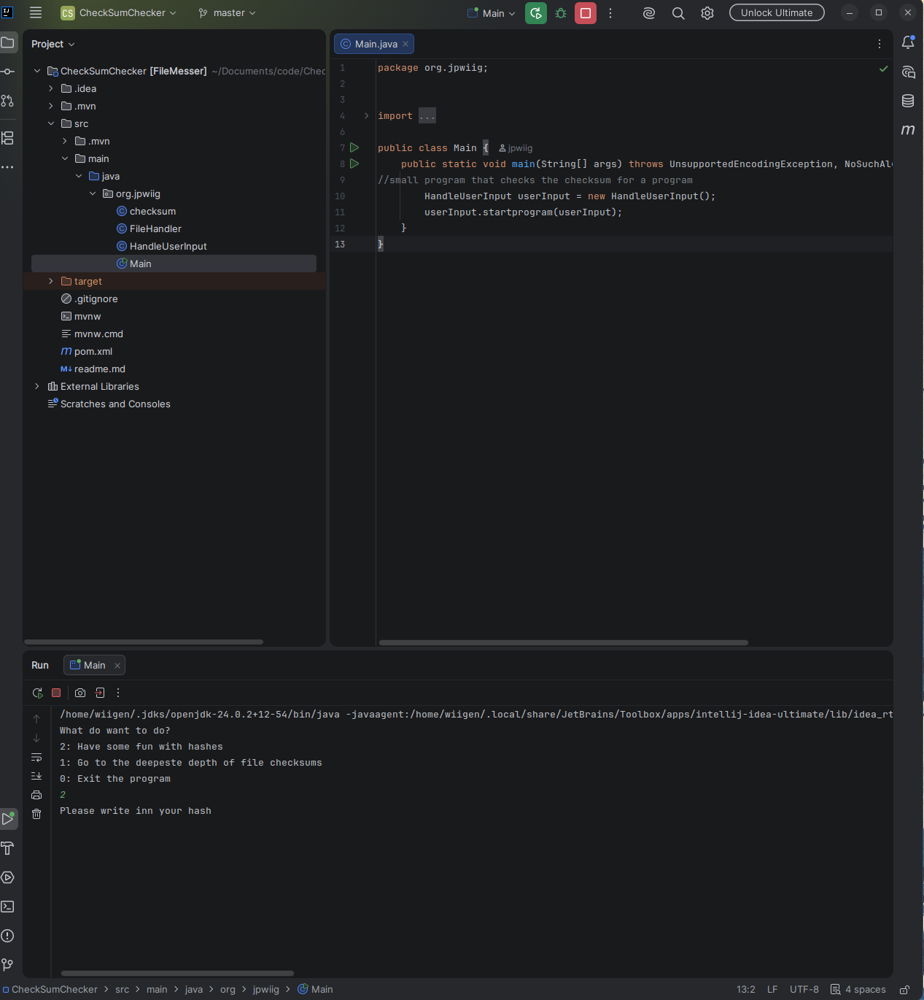

I am a big fan of learning by doing. What does this mean? Yes, that we have projects that explore different parts of the technology world, somthing that are extremly interesting, and hella fun. Feel free to explore the different projects and send me a message if you have any questions about the project!
Personal website that are my own home on the internet, here you can find somthing about what i like to do, what i do not like to do. This is the current website that you are looking at. This version is written in purley HTML, CSS and some javascript. Main focus on the project is to have great performance, some personal style and just a peice of the old fashion internet that everyone loves! All in a terminal style inspired from the cult classic hackers

CLI program to calculate hashes, the program are not complete, but more work are beeing planned to be worked on
